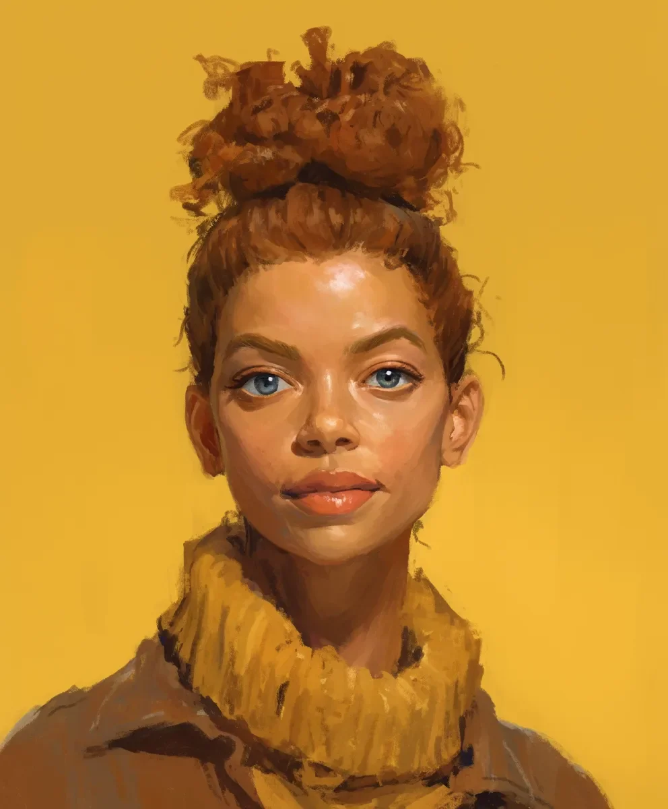

고대 두루마리에는 태양 에너지를 다스리는 법과 천상의 존재들과 교감하는 법에 대한 장들이 있었지만, 틴더 데이트 상대가 당신이 실제로 빛나고 있는 이유를 물어볼 때 어떻게 해야 하는지에 대해서는 전혀 언급이 없었다.
[The ancient scrolls had chapters on channeling solar energy and communing with celestial beings, but absolutely nothing about what to do when your Tinder date asks why you’re literally glowing.]
“미영아,” 이모의 문자가 울렸다. 늘 그렇듯 잔소리와 예언을 섞어서 할 때면 내 이름을 풀네임으로 부르곤 했다. 일식이 자정까지 절정에 이르지 않을 터였다 - 천체 현상이 늘 그렇듯 불편한 시간에 일어나는 게 전형적이었다 - 이는 내가 의식 공간을 준비하고 내 힘의 수준을 통제하는 데 약 12시간이 남았다는 뜻이었다.
[“Mi-young-ah,” my aunt’s text chimed, using my full name as she always did when mixing nagging with prophecy. The eclipse wouldn’t peak until midnight—typical of celestial events to run on inconvenient schedules—which meant I had roughly twelve hours to prepare the ritual space and get my power levels under control.]
우리 교단은 적응하면서 수세기를 살아남았다. 요즘은 그것이 소셜 미디어 인플루언서로 위장하는 것을 의미했다. 뷰티 블로거의 신비로운 광채를 의심하는 사람은 아무도 없었고, 각 여사제는 대략 6시간 분량의 직사광선을 담을 수 있었다 - 그 이상이면 초신성이 될 위험이 있었고, 그 이하면 의식을 수행할 수 없었다. 현대 생활은 힘을 관리하는 것을… 복잡하게 만들었다.
[Our order had survived centuries by adapting. These days, that meant hiding in plain sight as social media influencers. No one questioned a beauty blogger’s ethereal glow, and each priestess could hold roughly six hours of direct sunlight—any more and we risked going supernova, any less and we couldn’t perform the rituals. Modern life made power management… complicated.]
“아, 이거?” 나는 빛나는 내 얼굴을 대충 가리키며, 화난 벌떼처럼 피부 아래서 윙윙거리는 아침에 흡수한 햇빛을 억누르려 했다. “새로운 K뷰티 트렌드야. 글래스 스킨 2.0이라고.” 요즘은 거짓말이 더 쉽게 나왔지만, 냅킨 가장자리가 살짝 그을리는 것이 상황을 복잡하게 만들 것 같았다.
[“Oh, this?” I gestured vaguely at my luminescent face, trying to suppress the morning’s absorbed sunlight that buzzed beneath my skin like angry bees. “New K-beauty trend. Glass skin 2.0.” The lie slipped out easier these days, though the slight sizzle of my napkin’s edge threatened to complicate things.]
진호가 커피가 식은 것도 모르고 앞으로 몸을 기울였다. “진짜로 빛나는 것 같은데. 어떤 스킨케어 제품 쓰세요?”
[Jin-ho leaned forward, his coffee going cold. “It’s like you’re actually glowing. What kind of skincare are you using?”]
카페인이 든 별빛 같은 우주 에너지가 내 혈관을 타고 울렸고, 네이버의 은밀한 사찰 공급업체에서 주문한 축복받은 실크 실로 감은 내 꼼꼼하게 땋은 머리는 아침에 흡수한 에너지를 가두려 최선을 다하고 있었다. 재채기 한 번에도 이 비싼 강남 카페에서 미니 초신성이 터질 수도 있었다.
[The cosmic energy thrummed through my veins like caffeinated starlight, and my carefully braided bun—wrapped with blessed silk threads ordered from a discreet temple supplier on Naver—was doing its best to contain the morning’s absorbed energy. One sneeze and I might accidentally trigger a mini-supernova in this overpriced Gangnam café.]
“여름에 날 봐야 되는데,” 농담을 던졌다가 바로 후회했다. 신성한 태양의 자매단의 첫 번째 규칙: 첫 데이트에서 절대로 천체와 관련된 말장난을 하지 말 것. 민지 이모는 다음 보름달 의식 때 이 얘기를 끝도 없이 할 게 분명했다.
[“You should see me during summer,” I joked, then immediately regretted it. Rule number one of the Sacred Solar Sisterhood: never make celestial puns on first dates. Aunt Min-ji would never let me hear the end of it during our next full-moon ceremony.]
데이팅 앱의 프로필란에는 “고대 태양 여사제 교단의 몇 안 되는 후손 중 한 명"이라는 체크박스가 없었다. 보통은 그냥 "영적이지만 종교적이진 않음"과 "에너지 분야 종사"에 체크를 했다. 적어도 그건 기술적으로 거짓말은 아니었다.
[The dating app’s profile section didn’t exactly have a checkbox for "One of the few remaining descendants of an ancient order of sun priestesses.” Usually, I just checked “spiritual but not religious” and “works in energy sector.” At least that wasn’t technically a lie.]
“미영아, 일식이 온다! Eclipse coming!” 민지 이모의 다음 문자가 햇님, 달님, 기도 이모티콘들이 뒤섞인 채로 도착했다. “성스러운 준비가 필요해! 이 진호라는 애 - 강원도 집안이니? 가문은 괜찮아? 사진 보내! (디지털 축복™과 함께 보냄)”
[“미영아, 일식이 온다! Eclipse coming!” Aunt Min-ji’s next text arrived with a confusing mix of sun, moon, and prayer emojis. “Sacred preparations needed! This Jin-ho - his family from Gangwon-do? Good lineage? Send pics! (Sent with Digital Blessings™)”]
“저기요,” 진호가 내 얼굴을 뚫어지게 보며 말했다. “머리에서… 연기 나오는 거 맞나요?”
[“Excuse me,” Jin-ho said, squinting at my face. “Is your hair… smoking?”]
제기랄. 머리가 또 과열되고 있었다. 축복받은 실크 실에서 이미 연기가 나기 시작했고, 작은 별가루를 내뿜고 있었다. 이러다가는 저녁 의식 전에 흡수 한계치에 도달할 것 같았다.
[Crap. The bun was overheating again. The blessed silk threads were already starting to smoke, releasing tiny wisps of stardust. At this rate, I’d hit my absorption limit before the evening ritual.]
“그냥… 새로운 헤어 트리트먼트예요,” 나는 간신히 말을 꺼냈다. 손끝에서 터져 나오려는 작은 태양 폭발을 억누르면서 미친 듯이 머리를 두드렸다. 근처 피처들의 우유가 저절로 데워지기 시작하자 바리스타가 의심스러운 눈초리를 보냈다.
[“Just… a new hair treatment,” I managed, frantically patting my head while trying to suppress the mini solar flares threatening to escape my fingertips. The barista gave me a suspicious look as the milk in nearby pitchers began to spontaneously steam.]
테이블 위의 다육식물이 갑자기 꽃을 피우더니, 세 배로 자라서 진호의 호떡을 향해 뻗어나가자 진호의 표정이 혼란스러움에서 걱정으로 바뀌었다. “그거… 좀 특이하네요.”
[Jin-ho’s expression shifted from confused to concerned when the succulent on our table suddenly bloomed, grew three sizes, and started reaching for his hotteok. “That's… unusual.”]
“기후 변화예요,” 나는 불쑥 내뱉었다. “요즘은 식물들이 미친 짓을 하잖아요.”
[“Climate change,” I blurted. “Makes plants do crazy things these days.”]
휴대폰이 다시 진동했다. 민지 이모가 절의 새 태양광 패널과 묘하게 어울리는 한복을 입고 일식 의식 자세를 시연하는 영상을 보냈다. 여사제들이 최근 기술을 받아들이면서 우리의 신성한 카카오톡 단체방은 이제 천년된 지혜와 바이럴 댄스 챌린지가 뒤섞인 이상한 공간이 되어버렸다.
[My phone buzzed again. Aunt Min-ji had sent a video of herself demonstrating the proper eclipse ritual poses, her traditional hanbok somehow complementing the temple’s new solar panels. The priestesses’ recent embrace of technology meant our sacred KakaoTalk group was now a bizarre mix of thousand-year-old wisdom and viral dance challenges.]
“저기요,” 내 머리에서 주변 스마트폰들을 깜빡거리게 만드는 뚜렷한 윙윙거리는 소리가 나기 시작하자 나는 일어섰다. “정말 즐거웠는데, 이만 가봐야 할 것 같아요. 중요한… 약속이 있어서요.”
[“Look,” I said, standing up as my bun started emitting a distinct humming sound that made nearby smartphones flicker, “this has been lovely, but I should go. Important… appointment.”]
“벌써요?” 진호가 실망한 표정을 지었다. “하지만 차가 아직—” 그는 이제 끓고 있는 자신의 콜드브루를 보며 말을 멈췄다.
[“Already?” Jin-ho looked disappointed. “But your tea is still—” he paused, staring at his now-boiling cold brew.]
“미안해요, 급한 가족 일이라서요!” 나는 가방을 잡아채며 문으로 향하는 길에 실수로 화분 세 개를 깨달음에 이르게 했다. 뒤에서는 바리스타가 모든 콜드브루가 갑자기 완벽한 음용 온도가 됐다고 외치는 소리가 들렸다.
[“Sorry, can’t talk, family thing!” I grabbed my bag, accidentally blessing three houseplants into enlightenment on my way to the door. Behind me, I heard the barista exclaim that all their cold brew had spontaneously reached perfect drinking temperature.]
밖에서 마침내 한숨을 내쉬자, 작은 에너지 폭발이 모든 가로등을 미니 태양으로 만들어버렸다. 적어도 이번에는 지난주 롯데월드타워에서처럼 실수로 옥상정원을 만들어내진 않았다.
[Outside, I finally let out a breath, releasing a small burst of energy that turned all the street lights into miniature suns. At least this time I hadn’t accidentally created another rooftop garden like last week at the Lotte World Tower.]
집으로 걸어가는 동안 내 휴대폰은 다른 여사제들이 보내는 일식 준비 밈들과 수성의 역행이 우리의 태양 에너지 흡수율에 영향을 미치는지에 대한 논쟁으로 가득 찼다. 대만의 메이 수녀는 그렇다고 맹세했지만, 서울 지부는 여전히 회의적이었다. 현대의 문제, 고대의 해결책이었다.
[As I walked home, my phone filled with increasingly frantic texts from the other priestesses sharing eclipse preparation memes and arguing about whether Mercury being in retrograde affected our solar absorption rates. Sister Mei in Taiwan swore it did, but the Seoul branch remained skeptical. Modern problems, ancient solutions.]
휴대폰이 마지막으로 한 번 더 울렸다. 민지 이모가 절에서 찍은 셀카를 보냈는데, 어색한 카메라 각도에도 불구하고 의식용 도복은 흠잡을 데가 없었다. 캡션에는 이렇게 적혀 있었다: “어둠도 물리치고 귀여움도 놓칠 수 없을 때 🌞✨ #여사제라이프 #태양여왕들 #축복받음”
[My phone buzzed one final time. Aunt Min-ji had sent a selfie from the temple, her ceremonial robes immaculate despite the awkward camera angle. The caption read: “When u have to banish darkness but still look cute tho 🌞✨ #PriestessLife #SolarQueens #Blessed”]
상점 창문에 비친 내 모습을 보며 미소 지었다. 머리 위의 둥지머리는 담아둔 별빛으로 반짝였다. 어쩌면 현대의 데이트와 고대의 전통이 그렇게 양립할 수 없는 건 아닐지도 모른다. 새로운 알림이 떴다: 진호에게서 온 메시지였다.
[I smiled, watching my reflection in a shop window as my bun sparkled with contained starlight. Maybe modern dating and ancient traditions weren’t so incompatible after all. A new notification popped up: a message from Jin-ho.]
“내가 가본 커피 데이트 중에 가장 빛나는 시간이었어요. 다음엔 저녁 식사 어때요? 야외 좌석이 있는 좋은 곳을 알아요.”
[“That was the brightest coffee date I’ve ever had. Maybe we can try dinner next time? I know a great place with outdoor seating.”]